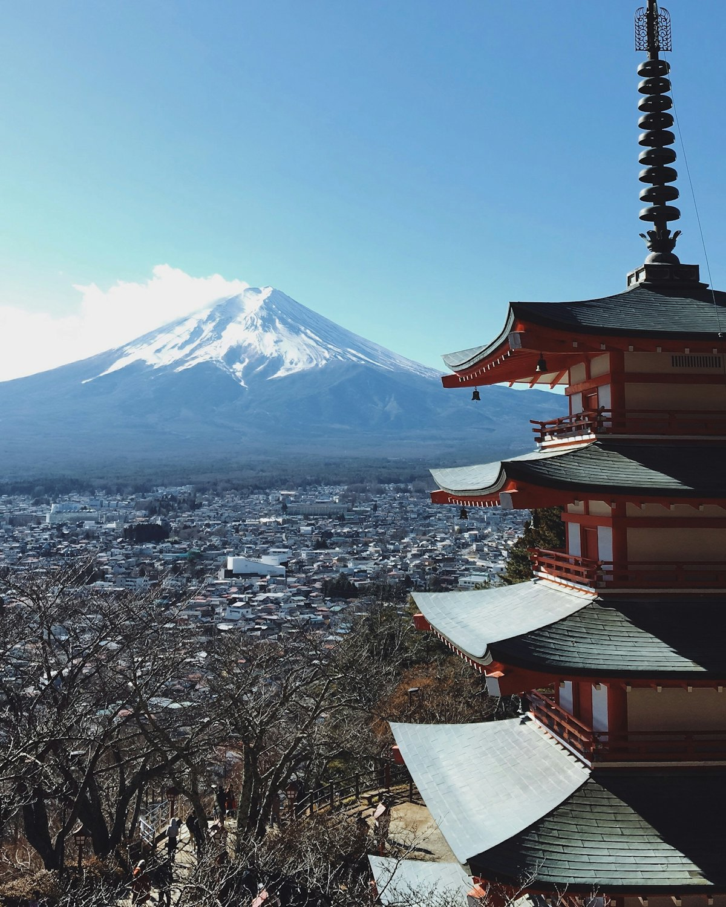
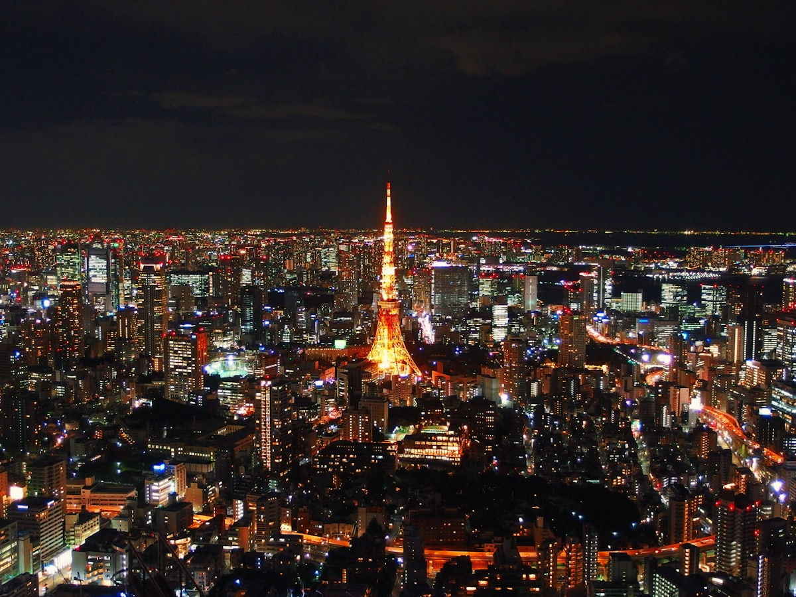
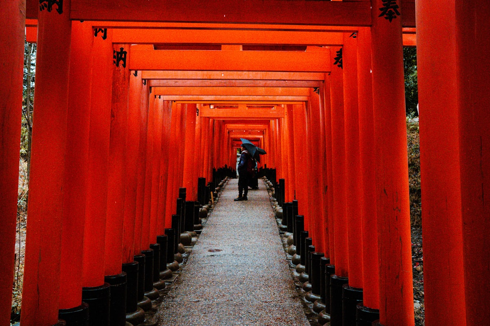
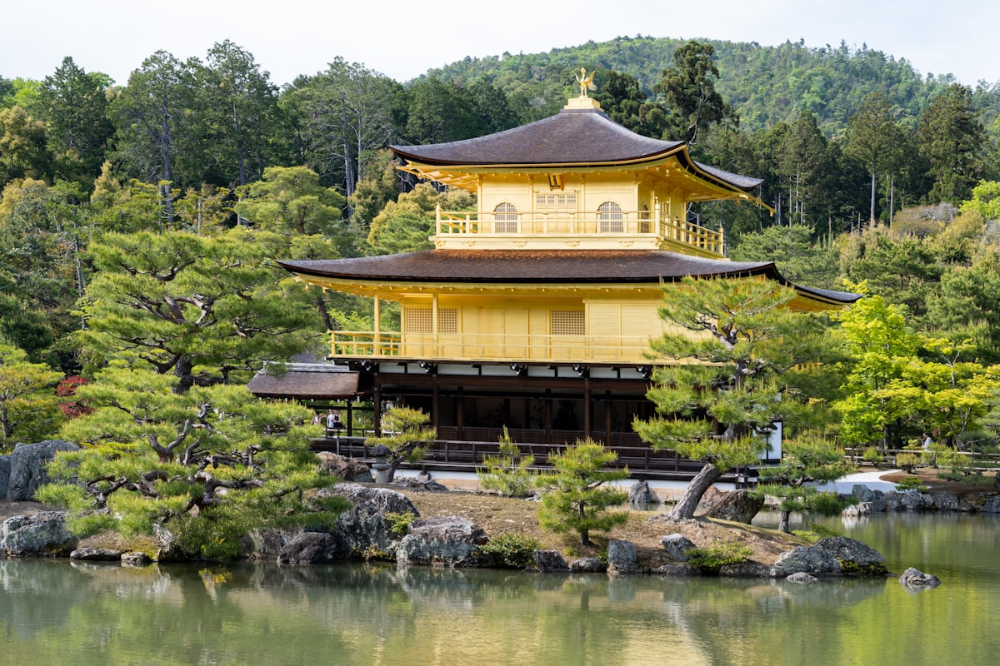
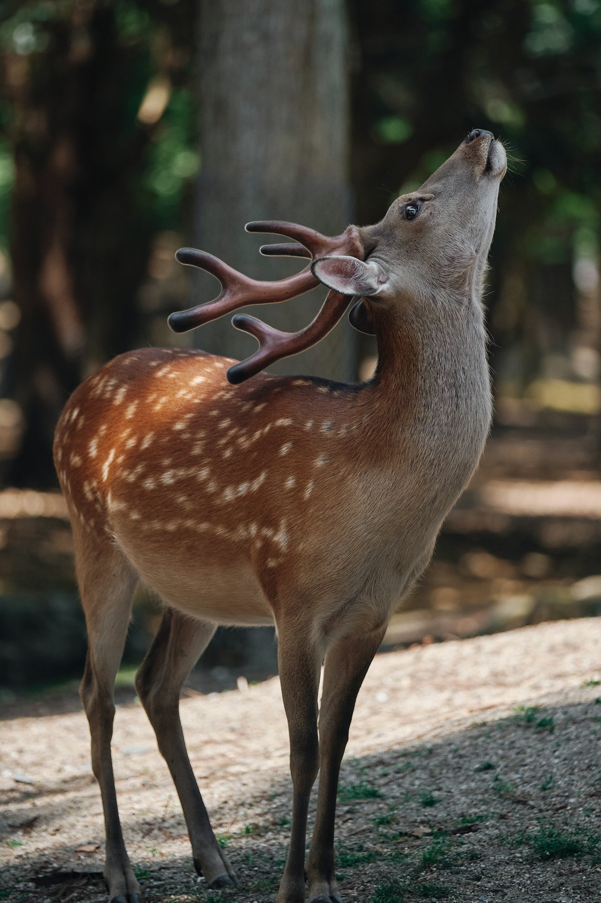
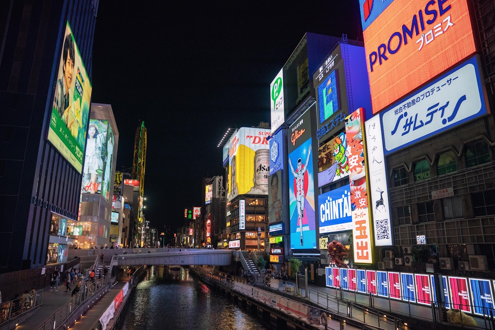
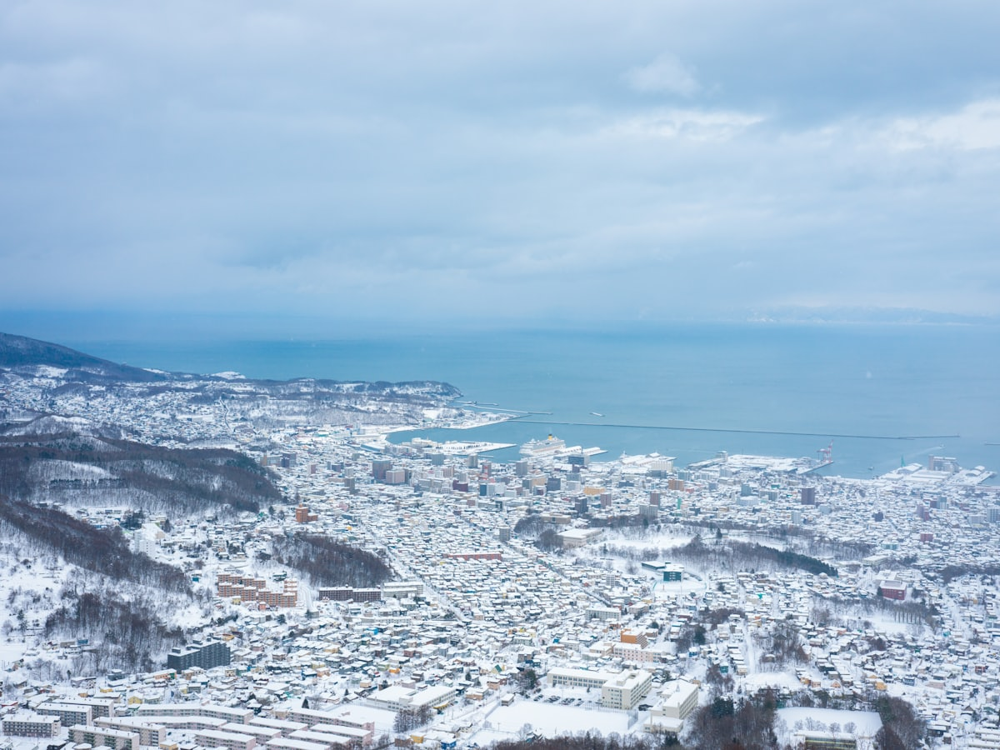
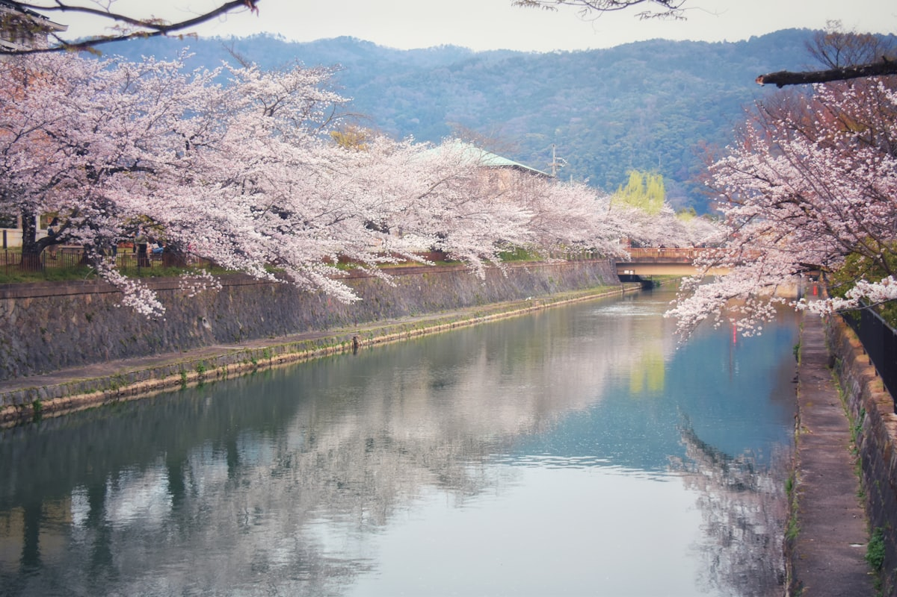

| 事项 | 结论 |
|---|---|
| 事项 | 结论 |
| 签证（最关键） | 单次旅游签最长停留 15 天；20 天行程必须办多次往返签（三年多次较易办），或拆成两段入境 |
| 推荐方案 | 本州 15 天（东京→京都→大阪→广岛）+ 北海道 5 天 |
| 返程约束 | 第 20 天从札幌/东京返程，航班多但旺季需提前 1 个月订 |
| 行程链 | 东京 → 镰仓 → 富士山/箱根 → 京都 → 奈良 → 大阪 → 广岛 → 北海道 |
| 预算（人均） | 经济 25000–32000 ／ 标准 40000–52000 ／ 舒适 70000–100000（人民币） |
| 三件提前事 | ① 办多次签 ② 订 JR Pass（全国 14 日版）③ 京都/箱根住宿提前 2–3 周 |
| 季节提醒 | 3 月底–4 月樱花、10–11 月红叶、12–2 月北海道雪景；暑期闷热但花火多 |
| 支付 | Suica/Pasmo 交通卡 + 现金 + 部分支持微信/支付宝（百货药妆） |
以下为 20 天 19 晚的推荐节奏：本州按「东→西」推进，最后飞北海道。每日主景点 ≤2 个，交通以新干线+区域 JR 为主。
| 日期 | 行程 | 过夜地 | 主题 |
|---|---|---|---|
| D1 抵东京 | 北京✈东京（成田/羽田约 3.5h），入住新宿，傍晚东京都厅展望台看夜景 | 新宿 | 抵达+预热 |
| D2 | 浅草寺+雷门 → 上野公园 → 秋叶原电器街 | 东京 | 江户+二次元 |
| D3 | 皇居东御苑 → 银座 → 东京塔/六本木 → 涩谷十字路口夜景 | 东京 | 都市核心 |
| D4 | 镰仓一日：江之电 → 镰仓大佛 → 鹤冈八幡宫 → 江之岛 | 东京 | 古都海岸 |
| D5 | 明治神宫 → 原宿/表参道 → 自由安排（teamLab/美术馆可选） | 东京 | 潮流街区 |
| D6 | 富士山：河口湖 → 新仓山忠灵塔 → 忍野八海，宿河口湖 | 河口湖 | 富士山日 |
| D7 | 箱根：大涌谷 → 芦之湖海盗船 → 露天温泉，宿温泉旅馆 | 箱根 | 温泉日 |
| D8 | 新干线到京都：金阁寺 → 二条城 → 锦市场 | 京都 | 古都初访 |
| D9 | 清水寺 → 二年坂三年坂 → 祇园花见小路 → 八坂神社 | 京都 | 传统和风 |
| D10 | 伏见稻荷千鸟居 → 岚山竹林 + 渡月桥 | 京都 | 神社与竹海 |
| D11 | 奈良：东大寺 → 奈良公园喂鹿 → 春日大社 | 京都 | 奈良一日 |
| D12 | 大阪：大阪城 → 通天阁 → 心斋桥 → 道顿堀夜景 | 大阪 | 大阪烟火 |
| D13 | 环球影城 USJ 全天（马里奥园区） | 大阪 | 乐园日 |
| D14 | 新干线到广岛：原爆圆顶 → 和平公园 → 宫岛严岛神社海上鸟居 | 广岛 | 广岛/宫岛 |
| D15 | 姬路城（世界遗产）→ 神户港夜景 或 大阪购物日 | 大阪 | 白鹭城/购物 |
| D16 | 大阪✈札幌：大通公园 → 白色恋人公园 → 拉面横丁 | 札幌 | 飞北海道 |
| D17 | 小樽：运河 → 北一硝子 → 八音盒堂 → 天狗山夜景 | 小樽 | 浪漫港町 |
| D18 | 富良野/美瑛（夏季薰衣草花田）或 定山溪温泉/滑雪 | 札幌 | 雪国原野 |
| D19 | 函馆：五棱郭 → 元町洋楼 → 函馆山百万夜景 | 函馆 | 函馆夜景 |
| D20 返程 | 札幌✈北京（直飞约 4.5h）或 函馆→东京转机返京，到家休息 | — | 收尾 |
以下为 20 天全程的逐小时执行时间线，可当作「当天打开照着走」的清单。标注 ※ 的可选项视体力与天气取舍。
| 时间 | 事项 |
|---|---|
| 14:00–17:00 | 北京✈东京（成田/羽田约 3.5h）。成田进市区坐 N'EX 或 Skyliner，羽田坐京急线/单轨 |
| 17:30–19:00 | 入住新宿（交通枢纽，去箱根/富士山方便），附近便利店买 Suica 交通卡 |
| 19:30–21:30 | 东京都厅展望台（免费）：45 层俯瞰东京夜景，晚餐新宿拉面或居酒屋 |
| 21:30 | 回酒店休息，倒时差（时差仅 +1h，基本无感） |
| 时间 | 事项 |
|---|---|
| 08:30–11:00 | 浅草寺 + 雷门（免费）：仲见世商业街，五重塔与雷门灯笼，可租和服拍照 |
| 11:00–13:00 | 上野公园（免费）：东京国立博物馆（成人 1000 日元）或逛公园樱花道 |
| 13:00–14:00 | 上野午餐：一兰拉面/回转寿司 |
| 14:30–17:30 | 秋叶原（免费）：电器街、动漫周边、扭蛋店，体验女仆咖啡（可选） |
| 18:00 | 晚餐：秋叶原或回新宿吃烤肉/寿喜烧 |
| 时间 | 事项 |
|---|---|
| 08:30–11:00 | 皇居东御苑（免费，需在苑内登记）：二重桥、天守阁迹，东京最安静的绿洲 |
| 11:30–13:00 | 银座（免费）：名牌旗舰店、三越/松屋百货、伊东屋文具 |
| 13:00–14:00 | 银座午餐：资生堂 Parlour 或天妇罗 |
| 15:00–17:30 | 东京塔（展望台成人约 1200 日元）或六本木之丘 52 层观景台 |
| 18:30–20:30 | 涩谷十字路口（免费）：全球最大人流路口，晚上去 SHIBUYA SKY 观景（约 2000 日元） |
| 时间 | 事项 |
|---|---|
| 08:00 | 新宿出发乘 JR 湘南新宿线/小田急到镰仓（约 1h） |
| 09:30–12:00 | 江之电沿线：镰仓高校前（灌篮高手平交道）、七里滨海岸线 |
| 12:00–13:00 | 午餐：镰仓小町通（紫菜仙贝、铜锣烧、抹茶冰淇淋） |
| 13:30–15:00 | 高德院镰仓大佛（300 日元）：日本第二大铜佛，可进入内部 |
| 15:00–16:30 | 鹤冈八幡宫（免费）：镰仓幕府时代守护神社 |
| 17:00–18:00 | 江之岛：海边落日，返程回东京 |
| 时间 | 事项 |
|---|---|
| 08:30–11:00 | 明治神宫（免费）：东京最大神社，参天古木中的鸟居，可求御守 |
| 11:00–13:30 | 原宿竹下通（免费）：可丽饼、个性潮店；表参道：名牌大道+建筑美学 |
| 13:30–14:30 | 午餐：表参道/涩谷 拉面或蛋包饭 |
| 15:00–17:30 | 自由安排：teamLab Planets（需提前预约，约 3200 日元）/ 根津美术馆 / 东京站一番街 |
| 18:30 | 晚餐：新宿思い出横丁（深夜食堂风小馆） |
| 时间 | 事项 |
|---|---|
| 08:00 | 新宿乘高速巴士/富士回游列车到河口湖（约 2h） |
| 10:30–12:30 | 新仓山浅间公园忠灵塔（免费，需爬 398 级台阶）：五重塔+富士山经典机位 |
| 12:30–13:30 | 河口湖畔午餐（ほうとう 面锅、富士宫炒面） |
| 14:00–16:00 | 河口湖环湖：天上山公园缆车（往返约 1000 日元）看逆富士 |
| 16:00–17:30 | 忍野八海（免费）：富士山雪水形成的八个泉池 |
| 18:00 | 宿河口湖温泉酒店，泡温泉看富士山日落 |
| 时间 | 事项 |
|---|---|
| 09:00 | 河口湖→御殿场（巴士）→箱根（约 1.5–2h） |
| 11:30–13:30 | 大涌谷（免费，缆车单程约 900 日元）：硫磺蒸汽谷，吃黑鸡蛋（延长 7 年寿命传说） |
| 14:00–16:00 | 芦之湖海盗船（约 1000 日元）+ 箱根神社水上鸟居（免费） |
| 16:30–18:00 | 入住温泉旅馆，怀石晚餐 |
| 19:00 | 露天风吕泡汤，缓解 7 天疲劳 |
| 时间 | 事项 |
|---|---|
| 09:00 | 箱根→小田原→新干线→京都（约 3.5h），入住京都站附近 |
| 12:30–14:30 | 金阁寺（成人 500 日元）：舍利殿金箔覆顶+镜湖池倒影，京都名片 |
| 15:00–17:00 | 二条城（成人 1300 日元）：德川幕府将军行宫，莺声地板 |
| 17:30–19:00 | 锦市场（免费）：京都的厨房，豆乳甜甜圈、渍物、海鲜串 |
| 19:30 | 京都站拉面小路晚餐 |
| 时间 | 事项 |
|---|---|
| 08:00–10:30 | 清水寺（成人 400 日元）：悬空舞台+音羽瀑布，穿和服漫步最佳机位 |
| 10:30–12:00 | 二年坂/三年坂（免费）：石板路老铺，抹茶冰淇淋、清水烧 |
| 12:00–13:00 | 午餐：汤豆腐/京怀石便当 |
| 13:30–16:00 | 八坂神社 + 祇园花见小路（免费）：艺伎出没街区，四条通商铺 |
| 16:30–18:00 | 三十三间堂（成人 600 日元）：1001 尊观音像，震撼 |
| 18:30 | 晚餐：京都居酒屋或烧肉，晚一点回酒店 |
| 时间 | 事项 |
|---|---|
| 08:00–10:30 | 伏见稻荷大社（免费）：千本鸟居隧道，稻荷山登山 2–3h 深度线 |
| 10:30–11:30 | JR 稻荷→京都→岚山（约 40min） |
| 11:30–13:30 | 岚山竹林（免费）：竹海小径，天龙寺（成人 500 日元）庭园 |
| 13:30–15:00 | 渡月桥 + 保津川（免费）：嵯峨野小火车（需提前购票约 880 日元） |
| 15:30–17:00 | 岚山大街吃团子/豆腐皮饭，返京都站 |
| 18:00 | 晚餐：河原町商区 |
| 时间 | 事项 |
|---|---|
| 08:30 | 京都乘 JR 奈良线到奈良（约 45min） |
| 09:30–12:00 | 东大寺（成人 600 日元）：世界最大木造建筑，大佛殿与奈良大佛 |
| 12:00–13:00 | 奈良公园（免费）：喂鹿仙贝（150 日元/10 片），鹿会鞠躬讨食 |
| 13:00–14:00 | 午餐：柿叶寿司/奈良渍物定食 |
| 14:30–16:30 | 春日大社（免费，本殿 500 日元）：三千石灯笼+若草山眺望 |
| 17:00 | 返京都，晚餐：京都烧肉/乌冬 |
| 时间 | 事项 |
|---|---|
| 09:00 | 京都→大阪（JR 约 30min），入住心斋桥/难波 |
| 10:00–12:30 | 大阪城（天守阁成人 600 日元）：丰臣秀吉居城，护城河+樱花道 |
| 12:30–14:00 | 通天阁（成人 700 日元）+ 新世界炸串午餐 |
| 15:00–17:00 | 心斋桥（免费）：购物主街，药妆店扫货 |
| 18:00–21:00 | 道顿堀（免费）：格力高广告牌、章鱼烧、大阪烧、河豚料理 |
| 时间 | 事项 |
|---|---|
| 07:30 | 开门前到 USJ（环球城站），普通票约 9800 日元，快速通行券另购 |
| 08:30–13:00 | 马里奥园区：超级任天堂世界（需园区入场券+马里奥手环 4200 日元） |
| 13:00–14:00 | 园内午餐：好莱坞餐厅/马里奥主题餐厅 |
| 14:00–18:00 | 哈利波特魔法世界：霍格沃茨城堡、黄油啤酒 |
| 18:00–20:00 | 夜间游行（视季节），大阪夜景晚餐 |
| 时间 | 事项 |
|---|---|
| 08:00 | 新干线：大阪→广岛（约 1.5h，JR Pass 全包） |
| 09:30–12:00 | 广岛原爆圆顶 + 和平纪念公园（免费）：人类历史一课 |
| 12:00–13:00 | 午餐：广岛烧（お好み焼き） |
| 13:30–16:30 | 宫岛严岛神社（神社 300 日元）：海上大鸟居、鹿、红叶馒头 |
| 17:00–18:30 | 潮汐看鸟居，日落返程回大阪/宿广岛 |
| 时间 | 事项 |
|---|---|
| 08:00 | 新干线：大阪→姬路（约 1h） |
| 09:30–13:00 | 姬路城（成人 1000 日元）：日本第一名城，白鹭城+好古园（联票 1050 日元） |
| 13:00–14:00 | 姬路午餐：穴子饭/明石烧 |
| 14:30–16:30 | 新干线到神户：南京町中华街、神户港、六甲山夜景（可选） |
| 17:30 | 神户牛肉晚餐（性价比优先选午市套餐），返大阪 |
| 时间 | 事项 |
|---|---|
| 09:00 | 大阪伊丹/关西✈札幌新千岁（约 1.5h，提前订特价约 400–800 元） |
| 11:30–13:00 | 新千岁机场国内线美食街午餐（海鲜丼/成吉思汗） |
| 13:30–15:00 | 入住札幌，大通公园（免费）：札幌中心轴 |
| 15:30–17:30 | 白色恋人公园（工厂参观 800 日元）：巧克力工厂+钟楼 |
| 18:00–20:00 | 薄野/拉面横丁：味噌拉面、成吉思汗烤肉、啤酒博物馆（可加） |
| 时间 | 事项 |
|---|---|
| 08:30 | 札幌乘 JR 到小樽（约 40min） |
| 09:30–12:00 | 小樽运河（免费）：复古仓库+雪中运河最出片 |
| 12:00–13:00 | 午餐：小樽海鲜丼/寿司（三角市场） |
| 13:00–15:30 | 北一硝子（免费）+ 八音盒堂（免费）：玻璃工坊与音乐盒博物馆 |
| 16:00–18:00 | 天狗山（缆车往返约 1500 日元）：俯瞰小樽港夜景，返札幌 |
| 时间 | 事项 |
|---|---|
| 08:00 | 札幌乘 JR 富良野线（夏季薰衣草特急）到富良野（约 2h） |
| 10:30–13:00 | 富田农场（免费）：7 月中–8 月初薰衣草花田，薰衣草冰淇淋 |
| 13:00–14:00 | 美瑛午餐：农场直供蔬果料理 |
| 14:00–17:00 | 美瑛青池 + 拼布之路（免费）：蓝色湖水与丘陵田埂，骑行/观光巴士 |
| 18:00 | 返札幌，晚餐：汤咖喱/成吉思汗 |
| 时间 | 事项 |
|---|---|
| 07:30 | 札幌乘 JR 到函馆（约 3.5h，或乘飞机 40min） |
| 11:00–13:00 | 五棱郭（塔展望台成人 900 日元）：星形城郭+雪中全景 |
| 13:00–14:00 | 午餐：函馆盐味拉面/海胆丼 |
| 14:30–16:30 | 元町 + 金森红砖仓库（免费）：教堂群与洋馆街 |
| 17:00–19:30 | 函馆山夜景（缆车往返约 1800 日元）：世界三大夜景之一，日落前上山 |
| 时间 | 事项 |
|---|---|
| 08:30–11:30 | 自由活动：札幌市中央卸卖市场（场外市场）海鲜早餐，三越/大丸百货补货 |
| 11:30–12:30 | 午餐：札幌味噌拉面收官 |
| 13:00–14:30 | 退房，机场巴士到新千岁机场 |
| 16:00–21:00 | 札幌✈北京（直飞约 4.5h），入境到家 |
必去（必去）/ 顺路（顺路）/ 可跳过（可跳过）。

必去
必去
必去
必去
必去
必去
顺路图片为 Unsplash 主题图（富士山、东京塔、伏见稻荷、金阁寺、奈良鹿、道顿堀、小樽等均为日本实景），用于页面配图。更多免费景点：上野公园、明治神宫、皇居东御苑、锦市场、大通公园。
点击左侧节点可在地图上定位；点击地图 marker 会高亮对应节点。坐标为 WGS-84 转 GCJ-02 纠偏后标注。
以下为单人、不含购物的估算，人民币计价；出发地基准北京。汇率按 100 日元 ≈ 4.6 元人民币估算，日元价格波动大。往返机票按淡季 3000–4500 元计。
| 项目 | 经济（25000–32000） | 标准（40000–52000） | 舒适（70000–100000） |
|---|---|---|---|
| 往返机票 | 北京⇄东京/札幌 3000–4000 | 含北海道段 5000–6500 | 直飞商务/灵活 10000–15000 |
| 住宿（19 晚） | 胶囊/民宿 300–450/晚 | 商务酒店 500–900/晚 | 温泉旅馆/星级 1200–2500/晚 |
| 交通（JR Pass 等） | JR 14 日 Pass + 市内卡 4500–5500 | JR 14 日 Pass + 出租车少量 6500–8000 | JR + 国内航班 + 包车 12000–18000 |
| 门票 | 基础景点约 800–1200 | 含 USJ/东京塔等约 2500–3500 | 全含 + 快速券 + 演出约 6000–9000 |
| 餐饮（20 天） | 便利店+拉面 4000–5000 | 正常下馆子 7000–9000 | 怀石/神户牛/米其林 15000–25000 |
带娃推荐：东京迪士尼海洋（预留 2 天）+ 富士急乐园 + USJ 二选一，砍掉广岛与姬路；大阪海游馆、上野动物园儿童友好。USJ 与迪士尼距离远，别安排连续两天。日本 3 岁以下儿童多数交通免费。
北海道段延长为 8–10 天：札幌冰雪节（2 月）+ 小樽点灯 + 富良野滑雪 + 洞爷湖 + 层云峡冰瀑；本州砍广岛。冬季日本酒店与机票整体便宜，但北方路面滑，防滑鞋必备。
| 方式 | 时长 | 参考价 | 备注 |
|---|---|---|---|
| 直飞（推荐） | 北京→东京约 3.5h / 札幌约 4.5h | 往返 3000–4500 元 | 国航/全日空/日航，成田、羽田、新千岁多场 |
| 转机 | 4–7h | 2500–4000 元 | 经上海/香港/首尔，便宜但费时 |
| 国际铁路 | — | — | 中国到日本无陆路，只能飞机/邮轮 |
| 区域 | 价格/晚 | 优点 | 短板 |
|---|---|---|---|
| 东京·新宿/涩谷 | 经济 300–500 / 标准 600–900 | 交通枢纽，夜生活丰富 | 旺季贵，换乘复杂 |
| 东京·银座/东京站 | 标准 700–1200 | 购物与机场线方便，安静 | 晚间较冷清 |
| 京都站/河原町 | 经济 350–550 / 标准 600–1000 | 古都核心，公交密集 | 町屋老房隔音一般 |
| 大阪·难波/心斋桥 | 经济 300–450 / 标准 500–800 | 美食购物集中，便宜 | 游客多 |
| 箱根/河口湖 | 温泉旅馆 1000–2500（含餐） | 温泉+富士山景观 | 一泊二食价格高，需提前订 |
| 札幌·大通/薄野 | 经济 300–450 / 标准 500–800 | 北海道交通中心 | 冬季雪天出行慢 |